Blasen zählen, Ende schätzen
Leg das iPhone neben den Gärbehälter: Blubbo zählt die Blubs im Gärröhrchen, zeigt die Gärkurve und schätzt das Gärende.
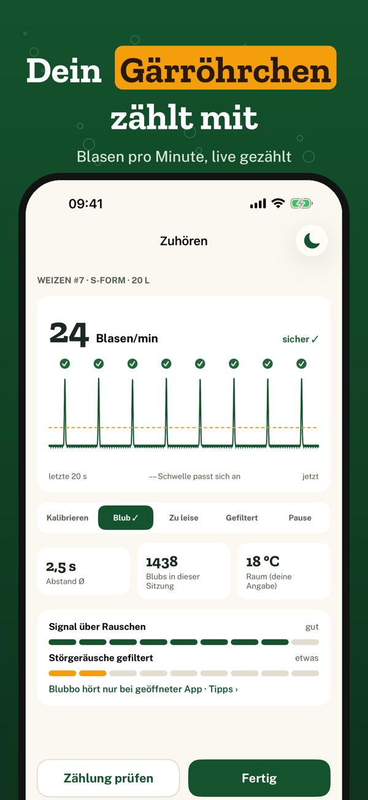
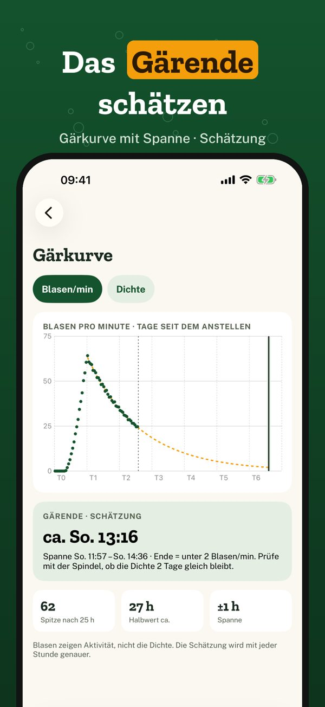
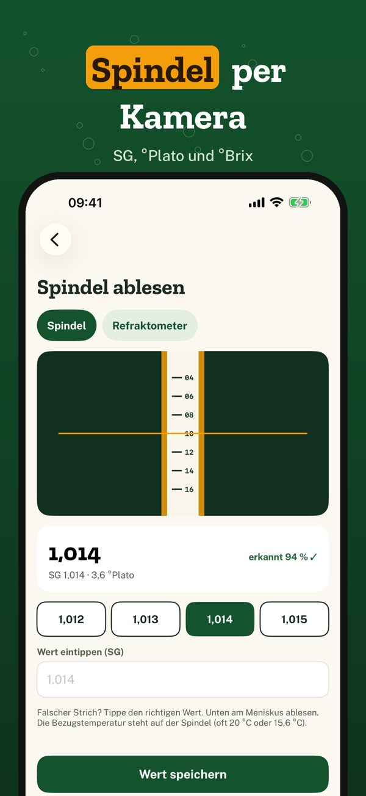
Blubbo hört deinem Gärröhrchen zu. Leg das iPhone neben den Gärbehälter und starte das Zuhören: Blubbo zählt jeden Blub, zeigt die Blasen pro Minute live und zeichnet daraus die Gärkurve. Wird die Gärung langsamer, schätzt Blubbo das Gärende und meldet sich. Spindel und Refraktometer liest du mit der Kamera ab.
Eine aktive Gärung mit Live-Zählung, Gärkurve, Hinweisen und 24 Stunden Verlauf funktioniert ohne Kauf. Blubbo Plus ist ein Einmalkauf: beliebig viele Chargen, ganzer Verlauf, Vergleich, Kamera-Ablesung. Kein Abo, keine Werbung.
Blubbo hört nur zu, solange du „Zuhören“ eingeschaltet hast, und wertet den Klang auf dem iPhone aus; nichts wird aufgenommen. Blasen zeigen Aktivität, nicht die Dichte: Gärende und Alkoholgehalt sind Schätzungen. Prüfe vor dem Abfüllen mit der Spindel. Blubbo hört nur zu, solange die App geöffnet ist – am besten am Ladekabel mit der dunklen Nachtansicht; Pausen bleiben in der Kurve markiert.
Terms of Use (EULA): https://www.apple.com/legal/internet-services/itunes/dev/stdeula/
Privacy: https://baytechbv.github.io/privacy/blubbo-eu/
Počítá bubliny, odhadne konec
Polož iPhone vedle kvasné nádoby: Blubbo počítá bublinky v kvasné zátce, kreslí křivku kvašení a odhadne jeho konec.
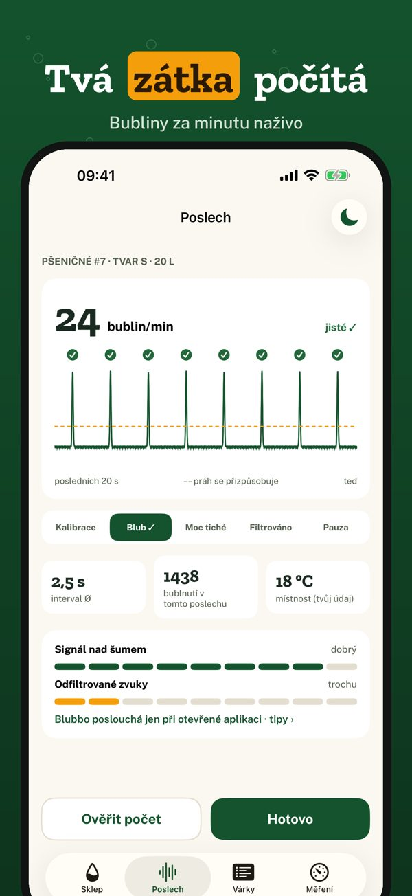
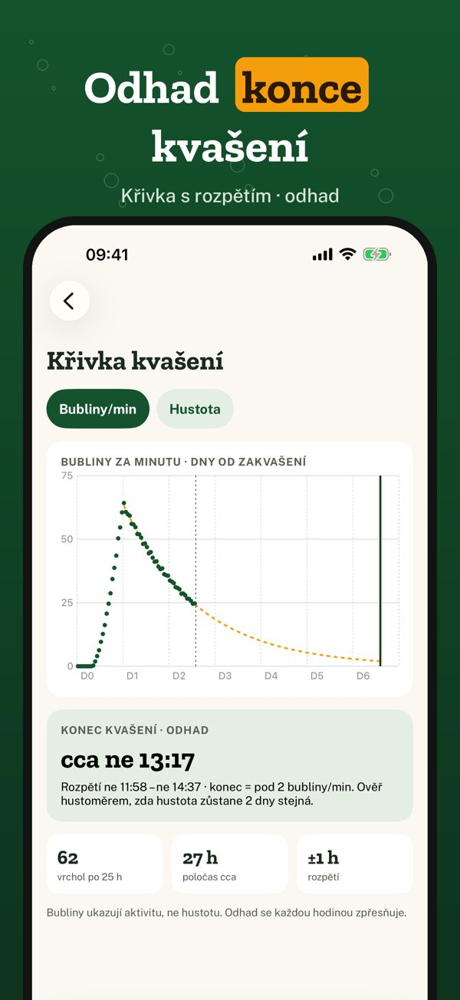
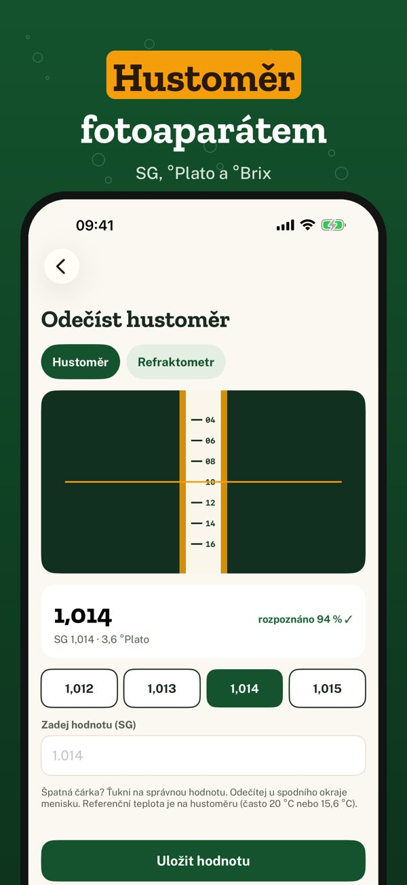
Blubbo poslouchá tvou kvasnou zátku. Polož iPhone vedle kvasné nádoby a zapni poslech: Blubbo spočítá každé bublnutí, ukáže bubliny za minutu naživo a nakreslí z nich křivku kvašení. Když kvašení zpomalí, odhadne jeho konec a dá ti vědět. Hustoměr a refraktometr odečteš fotoaparátem.
Jedno aktivní kvašení s počítáním naživo, křivkou, upozorněními a historií 24 hodin funguje bez nákupu. Blubbo Plus je jednorázový nákup: neomezeně várek, celá historie, srovnání, odečet fotoaparátem. Bez předplatného, bez reklam.
Blubbo poslouchá jen se zapnutým poslechem a zvuk analyzuje v telefonu; nic se nenahrává. Bubliny ukazují aktivitu, ne hustotu: konec kvašení i obsah alkoholu jsou odhady. Před stáčením ověř hustoměrem. Blubbo poslouchá jen při otevřené aplikaci – nejlépe na nabíječce s tmavým nočním režimem; pauzy zůstanou v křivce vyznačené.
Terms of Use (EULA): https://www.apple.com/legal/internet-services/itunes/dev/stdeula/
Privacy: https://baytechbv.github.io/privacy/blubbo-eu/
Liczy bąble, szacuje koniec
Połóż iPhone’a obok fermentora: Blubbo liczy bąble w rurce fermentacyjnej, rysuje krzywą fermentacji i szacuje jej koniec.
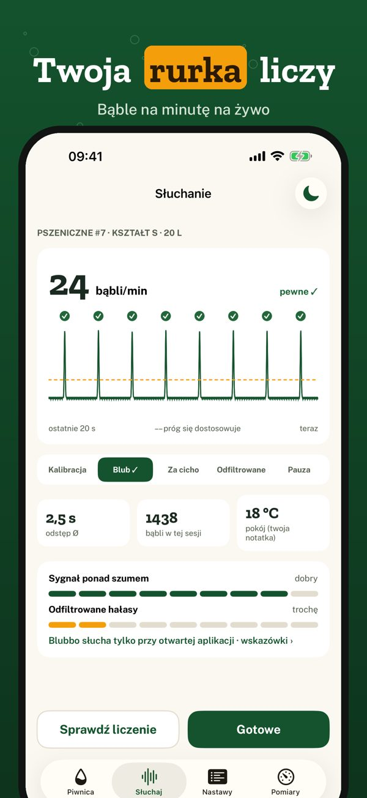
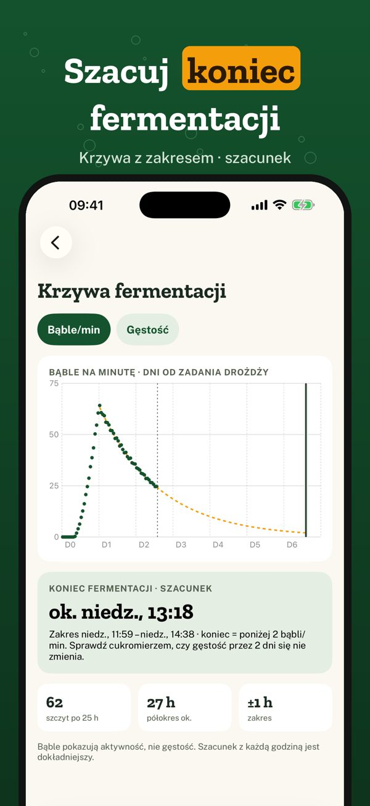
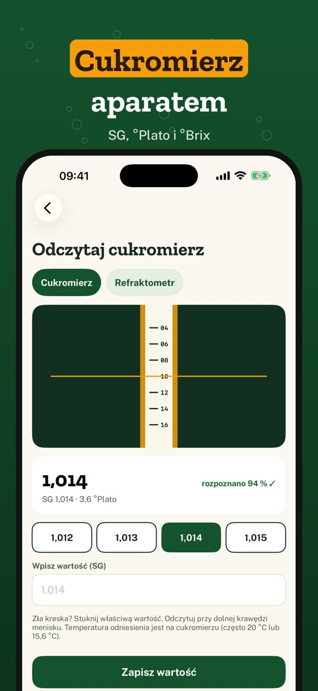
Blubbo słucha twojej rurki fermentacyjnej. Połóż iPhone’a obok fermentora i włącz słuchanie: Blubbo liczy każdy bąbel, pokazuje bąble na minutę na żywo i rysuje z nich krzywą fermentacji. Gdy fermentacja zwalnia, szacuje jej koniec i daje znać. Cukromierz i refraktometr odczytasz aparatem.
Jedna aktywna fermentacja z liczeniem na żywo, krzywą, powiadomieniami i historią 24 godzin działa bez zakupu. Blubbo Plus to jednorazowy zakup: dowolna liczba nastawów, pełna historia, porównanie, odczyt aparatem. Bez subskrypcji, bez reklam.
Blubbo słucha tylko przy włączonym słuchaniu i analizuje dźwięk w telefonie; nic nie jest nagrywane. Bąble pokazują aktywność, nie gęstość: koniec fermentacji i zawartość alkoholu to szacunki. Przed butelkowaniem sprawdź cukromierzem. Blubbo słucha tylko przy otwartej aplikacji – najlepiej na ładowarce z ciemnym widokiem nocnym; przerwy zostają zaznaczone na krzywej.
Terms of Use (EULA): https://www.apple.com/legal/internet-services/itunes/dev/stdeula/
Privacy: https://baytechbv.github.io/privacy/blubbo-eu/
Telt bellen, schat het einde
Leg je iPhone naast het gistvat: Blubbo telt de blubs in het waterslot, toont de gistingscurve en schat het einde van de gisting.
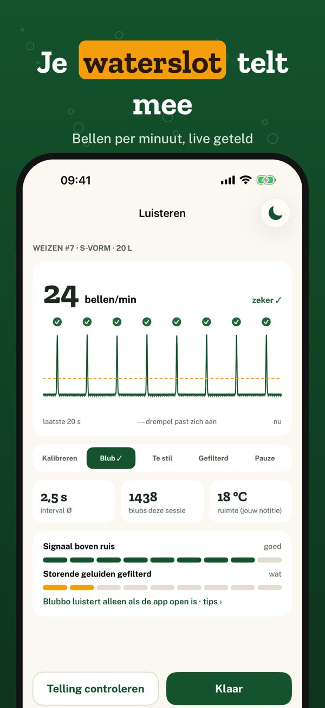
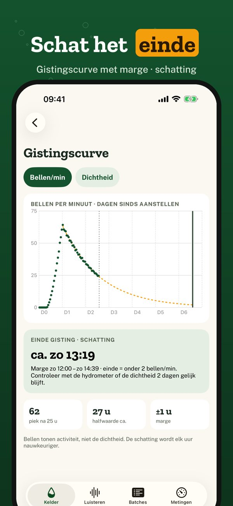
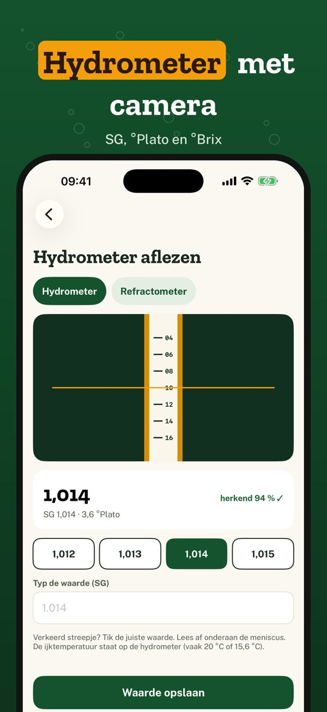
Blubbo luistert naar je waterslot. Leg je iPhone naast het gistvat en start het luisteren: Blubbo telt elke blub, toont de bellen per minuut live en tekent er de gistingscurve van. Gaat de gisting trager, dan schat Blubbo het einde en laat het je weten. Hydrometer en refractometer lees je af met de camera.
Eén actieve gisting met live telling, curve, meldingen en 24 uur geschiedenis werkt zonder aankoop. Blubbo Plus is een eenmalige aankoop: onbeperkt batches, hele geschiedenis, vergelijken, camera-aflezing. Geen abonnement, geen reclame.
Blubbo luistert alleen als je „Luisteren” aanzet en analyseert het geluid op de iPhone; er wordt niets opgenomen. Bellen tonen activiteit, niet de dichtheid: het einde van de gisting en het alcoholgehalte zijn schattingen. Meet voor het bottelen met de hydrometer. Blubbo luistert alleen als de app open is – het liefst aan de lader met de donkere nachtweergave; pauzes blijven in de curve gemarkeerd.
Terms of Use (EULA): https://www.apple.com/legal/internet-services/itunes/dev/stdeula/
Privacy: https://baytechbv.github.io/privacy/blubbo-eu/
Counts airlock bubbles
Put your iPhone next to the fermenter: Blubbo counts the airlock blubs, draws the fermentation curve and estimates when it will finish.
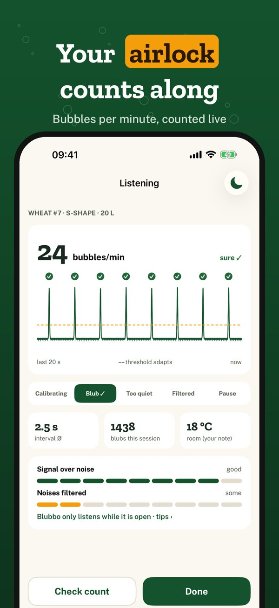
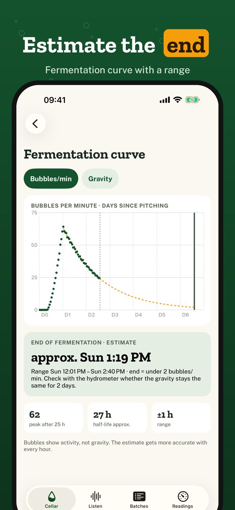
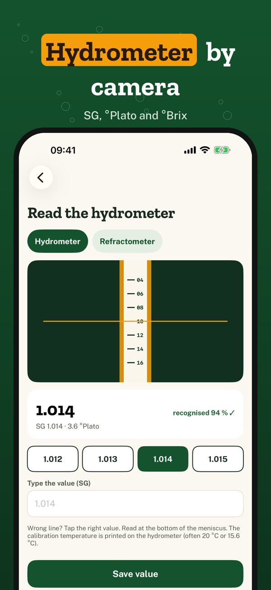
Blubbo listens to your airlock. Put your iPhone next to the fermenter and start listening: Blubbo counts every blub, shows bubbles per minute live and turns them into a fermentation curve. When activity slows down, Blubbo estimates the end of fermentation and lets you know. Read your hydrometer or refractometer with the camera.
One active fermentation with live counting, curve, notifications and 24 hours of history works without a purchase. Blubbo Plus is a one-time purchase: unlimited batches, full history, comparison, camera reading. No subscription, no ads.
Blubbo only listens while listening is switched on and analyzes the sound on the iPhone; nothing is recorded. Bubbles show activity, not gravity: the end of fermentation and the alcohol content are estimates. Check with a hydrometer before bottling. Blubbo only listens while the app is open – best on the charger with the dark night view; pauses stay marked on the curve.
Terms of Use (EULA): https://www.apple.com/legal/internet-services/itunes/dev/stdeula/
Privacy: https://baytechbv.github.io/privacy/blubbo-eu/